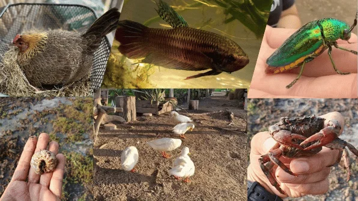

01 / DISCOVER
โลกเล็ก ๆ ของความหลากหลายSmall wonders, living connections
ชวนสังเกตพืช แมลง และสัตว์รอบตัว ตั้งคำถามถึงชีวิตและถิ่นอาศัย เพื่อเริ่มเข้าใจความหลากหลายทางชีวภาพจากสิ่งใกล้ตัวObserve plants, insects and animals. Ask questions about how they live and where they belong, making biodiversity tangible through everyday discoveries.